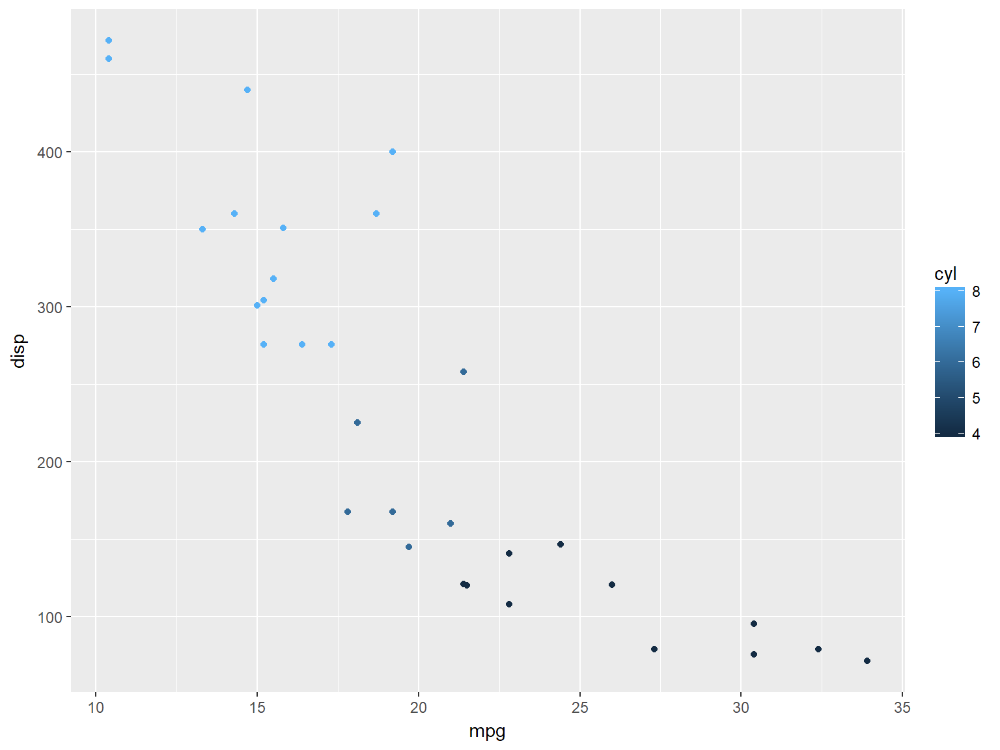

R is an integrated suite of software facilities for data manipulation, calculation and graphical display
ggplot2::qplot(mpg, disp, data = mtcars, colour = cyl)
sp_execute_external_script to call R from SQLlibrary(DBI)
library(odbc)
driver = "ODBC Driver 13 for SQL Server"
server = "advr.database.windows.net"
database = "advr"
uid = "lockedata"
pwd = "zll+.?=g8JA11111"
dbConn <- dbConnect(odbc(), driver = driver, server = server,
database = database, uid = uid, pwd = pwd)library(RODBCext)
dbstring <- glue::glue("Driver={driver};Server={server};Database={database};Uid={uid};Pwd={pwd}")
dbconn <- RODBC::odbcDriverConnect(dbstring)EXECUTE sp_execute_external_script
@language = N'R'
,@script = N'OutputDataSet <- InputDataSet'
,@input_data_1 = N'SELECT 1 as Col'
WITH RESULT SETS ((col varchar(50) not null)) CREATE TABLE [companyModels] (
[id] int NOT NULL PRIMARY KEY IDENTITY (1,1)
, [name] varchar(200) NOT NULL
, [modelObj] varbinary(max)
, [ValidFrom] datetime2 (2) GENERATED ALWAYS AS ROW START
, [ValidTo] datetime2 (2) GENERATED ALWAYS AS ROW END
, PERIOD FOR SYSTEM_TIME (ValidFrom, ValidTo)
, CONSTRAINT unique_modelname UNIQUE ([name]))
WITH (SYSTEM_VERSIONING = ON (HISTORY_TABLE = dbo.companyModelsHistory)); CREATE PROCEDURE modelUpsert
@modelname varchar(200) ,
@modelobj varbinary(max)
AS
WITH MySource as (
select @modelname as [name], @modelobj as [modelObj]
)
MERGE companymodels AS MyTarget
USING MySource
ON MySource.[name] = MyTarget.[name]
WHEN MATCHED THEN UPDATE SET
modelObj = MySource.[modelObj]
WHEN NOT MATCHED THEN INSERT
(
[name],
modelObj
)
VALUES (
MySource.[name],
MySource.modelObj
);dbWriteTable(dbConn, "flights", nycflights13::flights, overwrite = TRUE)library(nycflights13)
flightLM <- lm(arr_delay ~ month + day + hour, data = flights,
model = FALSE)
flightLM##
## Call:
## lm(formula = arr_delay ~ month + day + hour, data = flights,
## model = FALSE)
##
## Coefficients:
## (Intercept) month day hour
## -13.466402 -0.218229 -0.001232 1.659978sample_flights <- flights[1:5, ]
predict(flightLM, sample_flights)## 1 2 3 4 5
## -5.385970 -5.385970 -5.385970 -5.385970 -3.725991publishService(
"basicFlightsLM",
code = NULL,
# --- `model` is required for web service with serviceType `Realtime` --- #
model = "model = flightsLM",
# --- `serviceType` is required for this web service --- #
serviceType = "Realtime"
)RODBCext::sqlExecute(dbconn, "exec modelUpsert @modelname=? , @modelobj=?",
data = data.frame("modelFromR", paste0(serialize(flightLM,
NULL), collapse = "")))CREATE PROCEDURE generate_flightlm
AS
BEGIN
CREATE TABLE #varcha
([name] varchar(200),
[modelobj] VARCHAR(MAX)
)
INSERT INTO #varcha
EXECUTE sp_execute_external_script
@language = N'R'
,@script = N'
flightLM<-lm(arr_delay ~ month + day + hour, data=InputDataSet, model=FALSE)
OutputDataSet<-data.frame(modelname="modelFromInSQL",
modelobj=paste0( serialize(flightLM,NULL)
,collapse = "") )
'
,@input_data_1 = N'SELECT * FROM flights'
;
INSERT INTO companyModels(name, modelObj)
SELECT [name], CONVERT(VARBINARY(MAX), modelObj, 2)
FROM #varcha
ENDEXEC generate_flightlmDECLARE @mymodel VARBINARY(MAX)=(SELECT modelobj
FROM companymodels
WHERE [name]='modelFromInSQL'
);
EXEC sp_execute_external_script
@language = N'R',
@script = N'
OutputDataSet<-data.frame( predict(unserialize(as.raw(model)), InputDataSet),
InputDataSet[,"arr_delay"]
)
',
@input_data_1 = N'SELECT TOP 5 * from flights',
@params = N'@model varbinary(max)',
@model = @mymodel
WITH RESULT SETS ((
[arr_delay.Pred] FLOAT (53) NULL,
[arr_delay] FLOAT (53) NULL))CREATE PROCEDURE generate_flightlm2
AS
BEGIN
DECLARE @model varbinary(max);
EXECUTE sp_execute_external_script
@language = N'R'
, @script = N'
flightLM<-rxLinMod(arr_delay ~ month + day + hour, data=InputDataSet)
model <- rxSerializeModel(flightLM, realtimeScoringOnly = TRUE)
'
,@input_data_1 = N'SELECT * FROM flights'
, @params = N'@model varbinary(max) OUTPUT'
, @model = @model OUTPUT
INSERT [companyModels] ([name], [modelObj])
VALUES('modelFromRevo', @model) ;
ENDEXEC generate_flightlm2DECLARE @model varbinary(max) = (
SELECT modelobj
FROM companyModels
WHERE [name] = 'modelFromRevo');
SELECT TOP 10 d.*, p.*
FROM PREDICT(MODEL = @model, DATA = flights as d)
WITH("arr_delay_Pred" float) as p;DECLARE @model varbinary(max) = (
SELECT modelobj
FROM companyModels
WHERE [name] = 'modelFromRevo');
EXEC sp_rxPredict
@model = @model,
@inputData = N'SELECT TOP 10 * FROM flights'